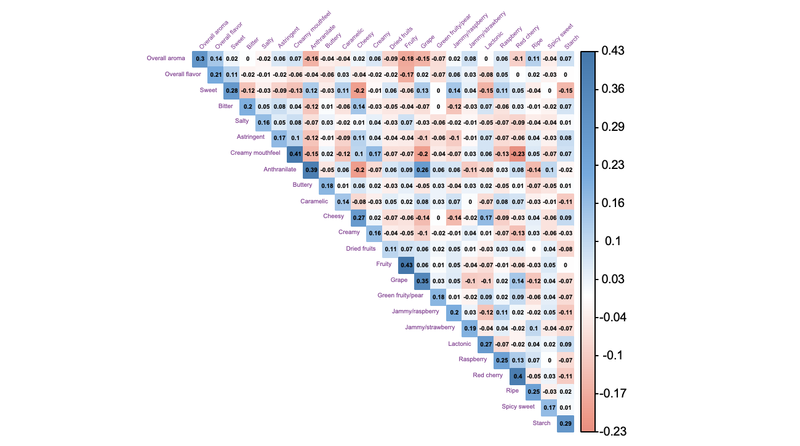
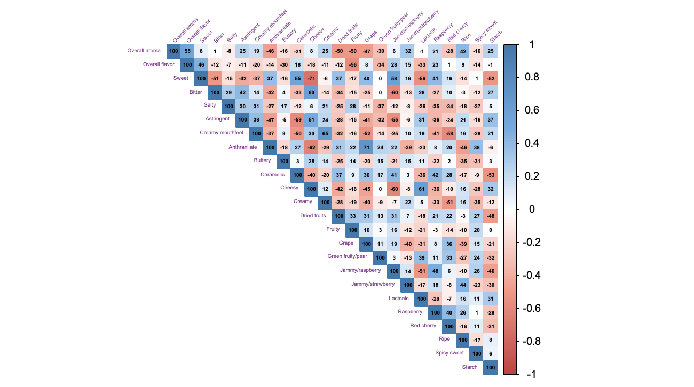
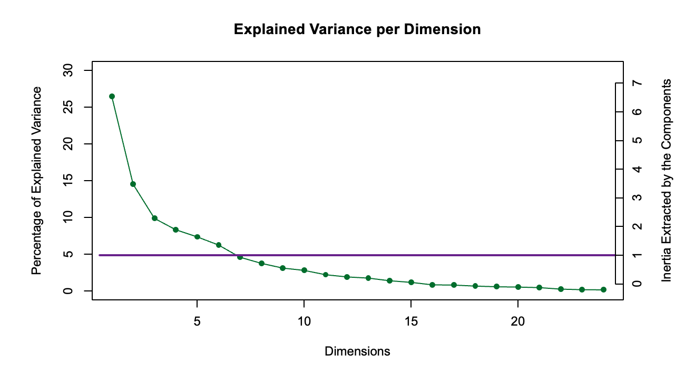
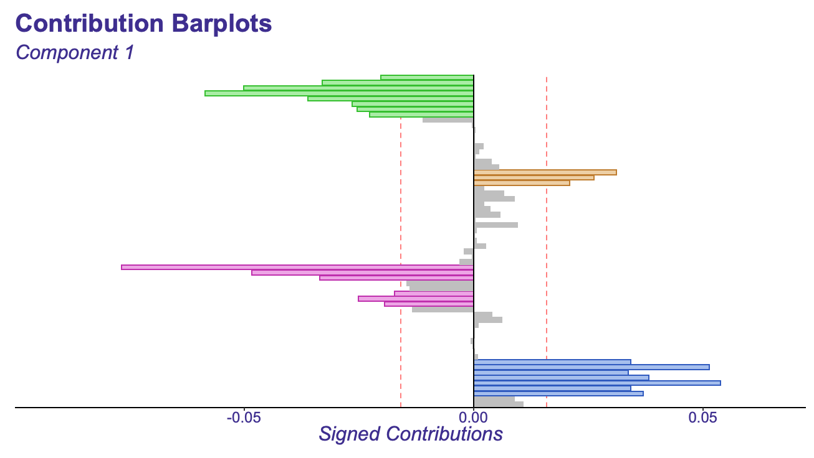
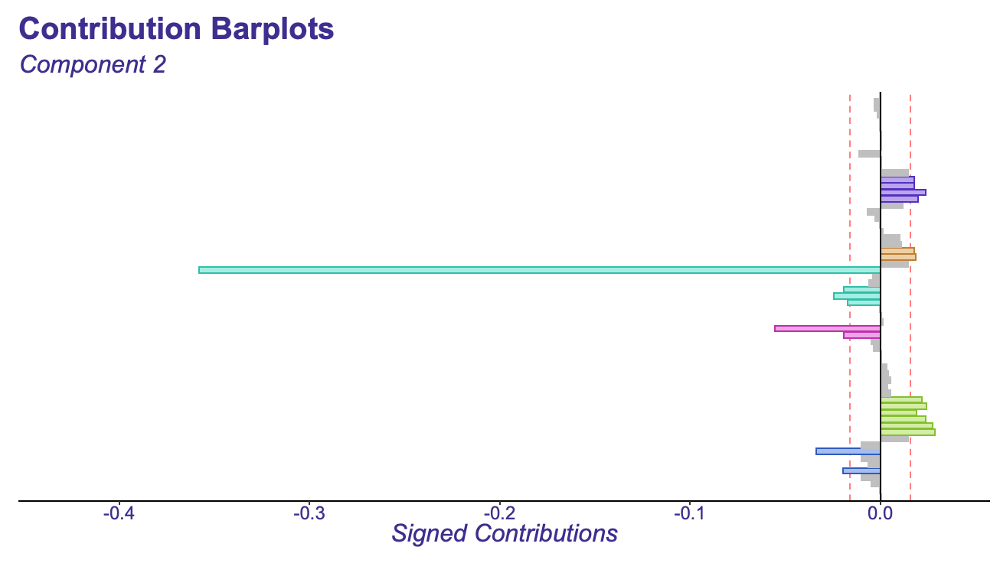
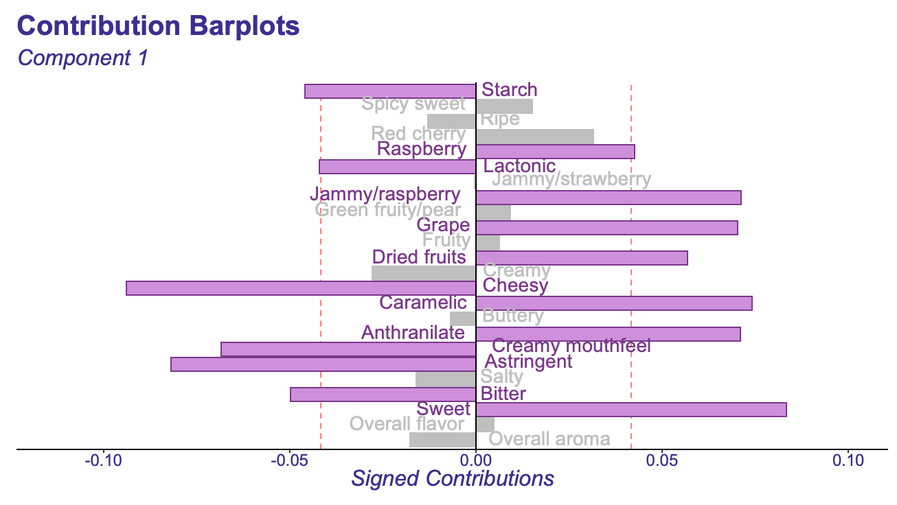
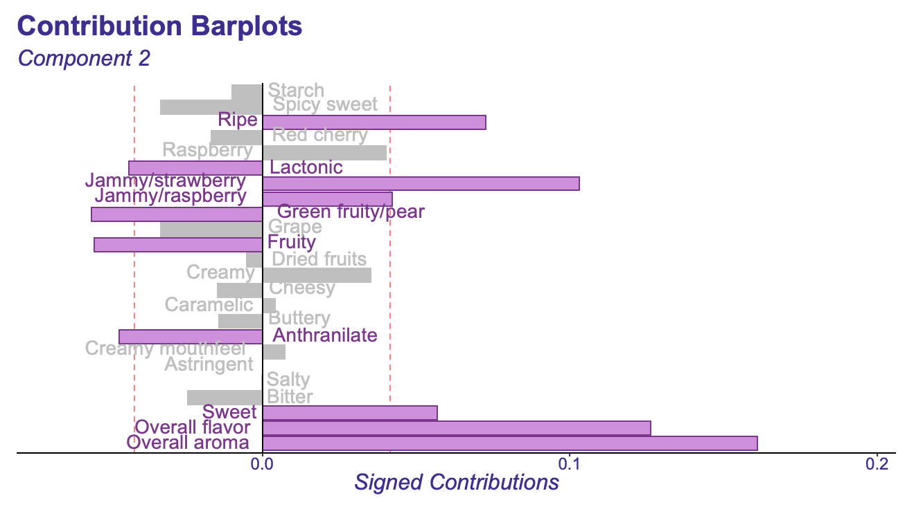
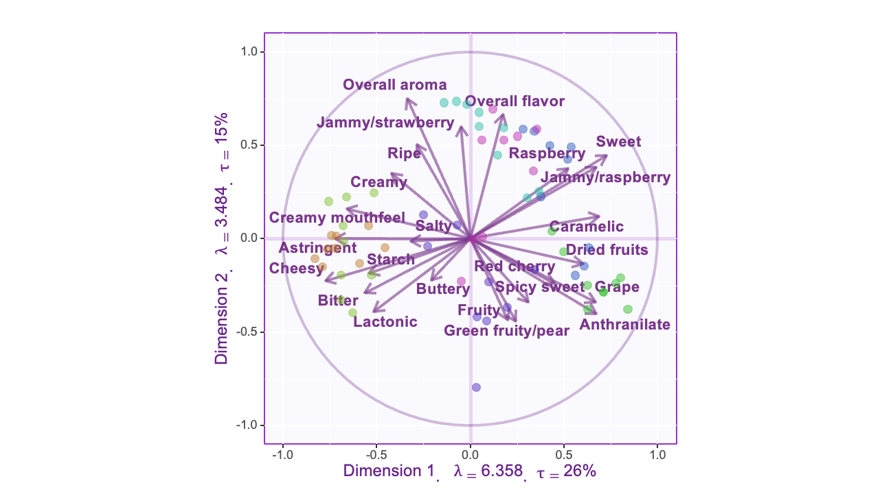
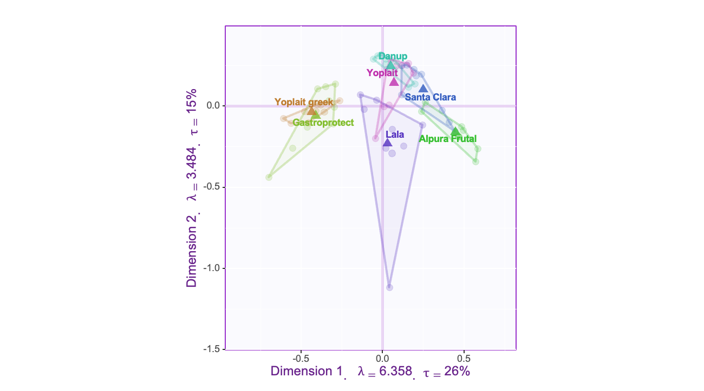
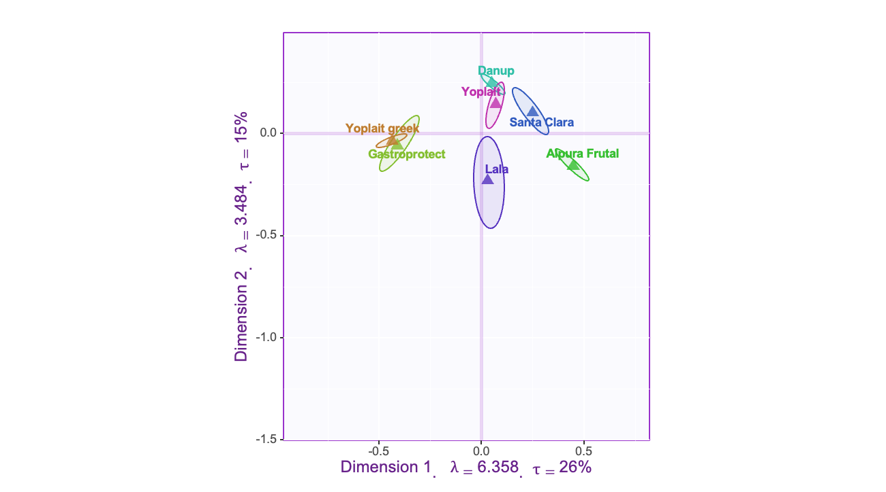

4 Interpreting the Data
In this section I will be interpreting the Data
4.1 Covariance Heat map
First, lets take a look at our covariance heat map of our strawberry yogurts and there sensory inputs. Our covariance heat map is great for looking at our variables at a glance to see which ones may have a larger/smaller effect on our components.

First, we will look at some of the variances on the covariance heat map, which include all our variables on the left-hand side. Note that all the variable’s variances are positive since they are not negative. One thing to note is that the larger the variance, the more the variable will co-vary, indicating it will be an essential variable. So our top variance is Fruity with .43. This one may be one to look out for (or maybe not).
4.2 Correlation Heat map
Next, lets take a look at some of our correlations.

For a PCA, it is essential to look at our correlations; after all, if two variables are highly correlated with each other, then it is time to take a look at whether it would be advantageous to weigh them equally. In this data, the most notable correlations are:
4.2.1 Top Correlations:
- Sweet and Cheesy -71
- Anthranalite and Grape 71
- Note: Anthranalite is actually an artifical grape flavoring that is used in products like grape kool-aid so it makes sense that they have one of the strongest correlations!
- Anthranalite and Cheesy -62
- Cheesy and Lactonic 61
- Note: Lactonic in this context is a “milky” type of flavor. So, again, it makes sense that they are highly correlated with each other
- Bitter and Cheesy 60
- Bitter and Jammy/Raspberry -60
- Astringent and Caramelic -59
Another thing to note when looking at this graph is how many variables have high correlations with other variables. For example, take a look at the “sweet” column, and you can notice that it has about six variables that have a strong correlation with it (Pearson correlation>.5). This could mean many things. If there are many positive correlations, those correlations mean that the variables represent similar things. The negative correlations mean that they represent the same thing also, but in a different direction. For example, our Sweet and Cheesy variables have a correlation of -71, representing a strong negative correlation with each other. This correlation means sweet yogurts are not typically Cheesy and vice versa.
4.3 Explained Variance Scree plot
Calculating our eigenvalues and dividing each by the cumulative eigenvalues will give us our percentage of explained variance. We will want to have the maximum explained variance while reducing our dimensions. To do this, we will look at a Scree Plot that will plot our dimensions, aka eigenvalues, aka components, to their corresponding explained variance percentage.
- Explained Variance Percentage
-
This is our Eigenvalue / Cumulutive Sum of Eigenvalues which will represent exactly how much variance this eigenvalue or component brings.
- Scree Plot
-
A line plot of the cumulative eigenvalues of the Explained Variance.

Once we have calculated our components, aka dimensions, we will want to know how many components we should keep in our analysis. There are two different tests that I will be talking about that we can use here (although there are probably other ways to do this analysis!).
Elbow test
The “elbow” is where the percentage of Explained Variance only makes marginal gains. Typically, it will be the “bend” of the elbow when you look at the graph. In this plot, we can see that the elbow starts around dimension 3. There are two ways to interpret this. The first is to keep all the components at the bend. The second option is to keep the components before the bend. If we keep all the components at the bend, then we would keep three components. If we keep before the bend, then we would keep two components.
Kaisar Criterion
Instead of using the elbow test, which often produces too few components and is more subjective, use the Kaisar Criterion, which is what the purple line above represents. The Kaisar Line is created by taking the average of all the explained variances and then plotting that line onto the graph. So, everything above the line, keep, and below the line, do not keep.
4.4 Contributions
Next, we will take a look at our contributions. For this, we have two different factors: our observations and our variables. Specific observations can make more significant contributions than other observations (same thing with the variables!), which simultaneously means they contribute a lot to the component and that they are more likely to be better represented by our components.
4.4.1 Observations

In this bar plot, each different color represents a different yogurt. For example the lime green bars represent the contribution from each observation of the yogurt Alpura Frutal. Anything over the line represents contribution that is larger then the average of the contribution and is a notable contribution. In this graph all the yo-plait Greek yogurt (in yellow) seems to make the smallest contribution to component 1.

4.4.2 Variables
When looking at contribution it is also important to look at how much each of the variables contributed to our components.

For component 1 our largest contributor to this component was Sweet and Cheesy which also happen to be 1 of 2 of our strongest correlation. There are also other variables that have similar levels of contribution. Most of these variables are correlated with each other but it will be easier to see it on the correlation circle then here.

In this graph, Overall flavor and Overall aroma seemed to be the biggest contributors then Jammy/Strawberry and Ripe.
4.5 Correlation Circle
Lets take a look at our correlation circle and make some obervations about it.

Our correlation circle here has a few things plotted . We have our observations that is plotted using the colorful circles, and then we have ours variables plotted as well each with their corresponding correlation score to our components. For example, We can notice the lime green clusters on the right side are best represented by component one and a little by component 2. Then we can also notice within those green clusters, the variables grape and anthranalite pop up, which means that these this yogurt may be one that is more of a grape/anthranalite flavor.
Another element we have on our graph is our correlation circle itself, which will help us determine how well our observations and variables are represented by our data.
First thing I notice when I look at this correlation circle is that none of our variables touch the circle. This means that their variance is not explained perfectly by our components. We do have some components that are a bit close to the circle such as sweet and cheesy. Since we have none that are on the circle itself we have to take some precautions when making a statement about the variables correlation with each. Here are some general guidelines for the angles between two variables:
| Degree of Angle | Correlation |
|---|---|
| around 180 degrees | Negative correlation |
| around 90 degrees | No correlation or very weak correlation |
| less then 90 degrees | Positive correlation |
Since none of our variables touch the circle however Its important to point out that the angles may not be entirely accurate. For example since sweet and buttery are at 180 degrees you may assume that they are negatively correlated but since buttery is not represented well by either of our components (which we can tell because it is closer to the center of our graph) we cannot trust the angles. For variables like sweet and cheesy however, you can make this connection and they do seem to be negatively correlated with each , with even our correlation heat map making this connection.
One thing to note, since our components don’t represent salty and buttery well this could mean they are probably better represented by a different component. Perhaps if we take a look at component three or beyond they are better represented in those.
4.6 Confidence and Tolerance Interval
4.6.1 Tolerance Intervals

Our Tolerance Intervals Gives is our maximum surfuce area of the points along with our mean factor scores which are illustrated by the triangles in the middle of the areas. This graph is great for illustrating the spread of the points and also showing us how our points compare to the average of the points. For example the Lala yogurt has a outliar observation that doesn’t seem to be anywhere close to the mean factor score for it.
4.6.2 Confidence Intervals

When analyzing components its important to think about the accuracy of the components. These confidence intervals represent the accuracy of our components to generalizing our yogurts. The larger the surface area of the yogurt, the less accurate we can that the component will represent for that yogurt. In this instance, we have a LaLa yogurt which seems to have a low confidence intervals. In contrast, our Danup yogurt will have a high degree of accuracy.